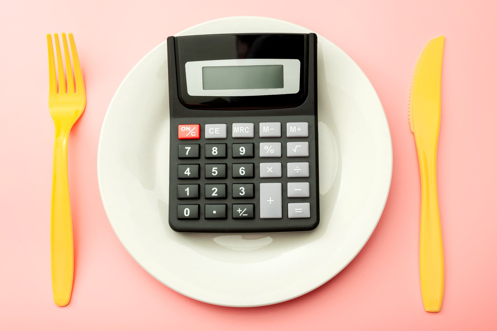

Como funciona a Calculadora de Calorias
A Calculadora de Calorias do NutriCalc é uma ferramenta prática e educativa que permite estimar a energia ingerida com base nas suas refeições. Ideal para quem deseja ter mais controle alimentar e atingir objetivos como perda de peso, ganho de massa ou apenas manter hábitos saudáveis.
📊 O que são calorias?
Calorias são a medida de energia dos alimentos. Nosso corpo utiliza essa energia para manter funções vitais como respiração, circulação e até o raciocínio. Cada alimento oferece uma quantidade específica de calorias, que deve ser considerada de acordo com suas metas nutricionais.
🧮 Como funciona nossa calculadora?
- Você seleciona os alimentos consumidos durante o dia.
- Escolhe a quantidade (em colheres, gramas, copos etc.).
- A calculadora consulta os dados da Tabela TACO.
- O total de calorias e nutrientes é somado e exibido.
📁 Fontes de dados confiáveis
Utilizamos as principais referências brasileiras:
- Tabela TACO - Universidade de Campinas.
- IBGE - para hábitos alimentares nacionais.
- ANVISA - para alimentos industrializados.
🎯 Por que usar essa ferramenta?
- Controle real da ingestão calórica.
- Montagem de cardápios personalizados.
- Consciência alimentar e melhores escolhas no dia a dia.
💡 Exemplo prático:
- 2 fatias de pão integral — 138 kcal
- 1 colher de sopa de requeijão — 60 kcal
- 1 banana média — 90 kcal
- 1 xícara de café com leite — 50 kcal
Total estimado: 338 kcal
🧠 Dicas práticas
✔️ Use uma balança de cozinha para maior precisão.
✔️ Use nossa Calculadora de Gasto Calórico para equilibrar consumo e gasto.
✔️ Não foque só nas calorias: analise também proteínas, fibras e gorduras boas.
✅ Conclusão
Ter consciência do que você consome é um passo importante para cuidar da saúde. Com a Calculadora de Calorias do NutriCalc, você transforma informação nutricional em ação!